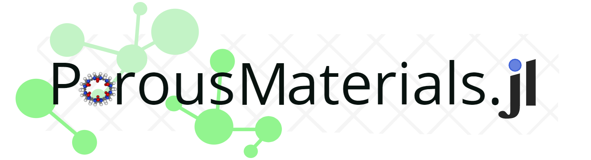

 A pure-Julia package for classical molecular modeling of adsorption in porous crystals such as metal-organic frameworks (MOFs).
🔨 Compute the potential energy of a molecule at particular position and orientation inside of a porous crystal
🔨 Write a potential energy grid of a molecule inside a porous material to visualize binding sites
🔨 Compute the Henry coefficient of a gas in a porous crystal
🔨 Run grand-canonical Monte Carlo simulations of gas adsorption in a porous crystal
Designed for high-throughput computations to minimize input files and querying results from output files. User-friendly. Instructive error messages thrown when they should be. Well-documented. Easy to install.
In development, please contribute, post issues 🐛, and improve!
Installation
- Download and install the Julia programming language, v1.5 or higher.
- In Julia, open the package manager (using
]) and enter the following:
pkg> add PorousMaterials- In Julia, load all functions in
PorousMaterials.jlinto the namespace:
julia> using PorousMaterials # that's itTests
Run the tests in the script tests/runtests.jl manually or by ] test PorousMaterials in the Julia REPL.
Direct tests for Henry coefficients and grand-canonical Monte Carlo simulations take much longer and must be run separately; they are found in tests/henry.jl and tests/gcmc_long.jl.